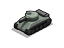
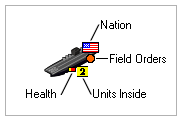
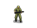
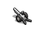
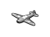
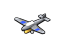
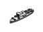
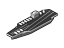
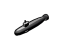
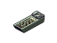

Units

The exact units which appear in the game depend on the Ruleset.
In the "Official 1900-2030" Ruleset, nations begin the game with relatively primitive military units.
These units correspond roughtly to military technology around the year 1900.
As a nation's technology progresses, it gains access to more advanced units.
Old units can be upgraded to newer, more advanced units.
How to Read Unit Information:
Nation: The Nation which owns and controls the unit.
Field Orders: Tells the unit how to behave when it discovers an enemy unit in midturn.
For example, if a submarine discovers an enemy frieghter partway through its turn, the field orders
determine what the submarine does (Does it attack? Does it avoid combat and preserve it's secrecy?)
Field Orders do not affect unit behavior when the player gives explicit orders to attack.
Units Inside: Shows the number of units inside or at that location. In this case, there
are two aircraft on the carrier. Left-clicking on the carrier gives more information.
Health: Shows the health of the unit. Undamaged units do not show a health indicator.
A health indicator showing more red means that the unit is closer to being destroyed. Many units
can be repaired if they are sent to one of their nation's cities.
Types of Units:
Units fall into a few related categories. While the units vary based on the Ruleset, these general descriptions should hold true across all Rulesets:
Ground Units:

Infantry move slowly, but are a good defensive unit. They can
build airfields, fight well in a variety of terrain, and have the ability to entrench (which increases their defensive value).
Tanks move quickly, especially on roads. Their mobility is reduced in forests,
and they can't travel through mountains (though they can travel on roads through mountains). Because they tend to have several
Hit Points, they can be repaired after being damaged.
Artillery can attack from a distance, without the threat of direct counterattack.
They are vulnerable in combat, however, and should avoid direct combat.
Aircraft:

Fighters are useful for destroying enemy aircraft. They prevent enemy aircraft from attacking a player's own territory,
and make the skies safe for a player's bombers in enemy territory.

Tactical Bombers are used against enemy ground and sea units. To avoid enemy fire, they tend to be faster and more
manuverable than strategic bombers, but less so than fighters. They may carry small bomb payloads or torpedos for attacks on ships.
Strategic Bombers carry large bomb payloads and are specialized for attacking large immobile targets like cities and buildings.
They tend to be vulnerable to enemy fighters and antiaircraft weapons.
Missiles:
Missiles are used against a variety of targets: tactical (against ground units, ships), and strategic missiles (against cities and buildings).
With the research of nuclear technology, they also play a role as nuclear-tipped ICBMs.
Naval Units:

Destroyers, Cruisers, and Battleships play a role in naval combat. They each have trade-offs in cost and specialization
(e.g. Battleships designed for combat against other surface ships, destroyers more specialized against submarines).

Aircraft Carriers play an important role in expanding the effective range of aircraft. The presence of aircraft also gives
a fleet superior visibility into the surrounding area, and tactical aircraft threaten enemy ships.

Submarines are difficult to detect, and that gives them the capability to threaten enemy waterways, perform surveillance,
and attack vulnerable enemy ships.

Transports are necessary for moving ground units across water. They are very vulnerable to attack, however.
Related Topics:
(None)